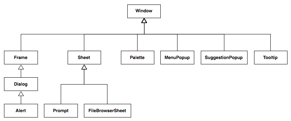

Though every tutorial example thus far has used windows, Pivot's actual window classes have not yet been explicitly discussed. This is because, for many applications (especially those that are browser-based), a single main application window is sufficient. However, more complex applications often require multiple windows, allowing a user to see and interact with a variety of information.
Though the root of the WTK component hierarchy is an instance of Display, windows generally represent an application's primary entry point into the UI. Windows are always direct descendants of the display. They represent a place on the screen where the application can draw or place user interface elements.
The class diagram below shows the Pivot window class hierarchy (though it is not shown in this diagram, Window actually extends Container, which extends Component, the root of all WTK UI classes):

Window class hierarchy.
The following is a description of each window type:
-
Window - Base window class; it is not abstract and is the most basic means by which content may be placed on the screen. It simply provides an undecorated region in which other components may be placed.
-
Frame - A window with a title bar and border for dragging and resizing.
-
Dialog - A frame that is generally used for collecting user input (engaging in a "dialog" with the user); may optionally be "modal", blocking input to its owner.
-
Alert - A dialog that is generally used to present brief notifications to the user.
-
Sheet - A window that, like a dialog, is generally used for collecting user input; however, unlike dialogs, sheets always have an owner, and are always modal over the owner's client area.
-
Prompt - A sheet that is generally used to present brief notifications to the user; the sheet equivalent of Alert.
-
MenuPopup - A popup window that is used to present a menu to the user. It can be used stand-alone as a context menu, but is also used by other components including MenuBar and MenuButton.
-
SuggestionPopup - A popup window that provides "auto-complete" functionality for a text input.
-
Palette - A floating tool palette window.
-
FileBrowserSheet - A sheet that allows the user to browse the local file system.
-
Tooltip - A small, popup-like window that disappears as soon as the user moves the mouse.
Most of the tutorial examples up to this point have used a single, maximized, decorationless Window to host their example content, since this type of user interface is well-suited to browser-based deployment as employed by this tutorial. However, Pivot applications are not limited to this sort of interface. Just like a native windowing toolkit, a Pivot application can open as many windows on the display of as many different types as are required by the application.
The following sample application demonstrates many of these window types. It creates three top-level frames, each of which contains buttons for launching several other window types:
The content of each frame is defined in "frame.bxml":
<Frame bxml:id="frame" icon="@application_form.png"
preferredWidth="480" preferredHeight="360"
xmlns:bxml="http://pivot.apache.org/bxml"
xmlns:content="org.apache.pivot.wtk.content"
xmlns="org.apache.pivot.wtk">
<bxml:define>
<bxml:include bxml:id="dialog" src="dialog.bxml"/>
<bxml:include bxml:id="sheet" src="sheet.bxml"/>
</bxml:define>
<bxml:script>
var palette = null;
</bxml:script>
<BoxPane orientation="vertical">
<PushButton buttonData="Show Alert">
<buttonPressListeners>
importPackage(org.apache.pivot.wtk);
function buttonPressed(button) {
Alert.alert("This is an Alert.", frame);
}
</buttonPressListeners>
</PushButton>
<PushButton buttonData="Show Prompt">
<buttonPressListeners>
importPackage(org.apache.pivot.wtk);
function buttonPressed(button) {
Prompt.prompt("This is a Prompt.", frame);
}
</buttonPressListeners>
</PushButton>
<PushButton buttonData="Show Dialog">
<buttonPressListeners>
importPackage(org.apache.pivot.wtk);
function buttonPressed(button) {
dialog.open(frame, null);
}
</buttonPressListeners>
</PushButton>
<PushButton buttonData="Show Sheet">
<buttonPressListeners>
importPackage(org.apache.pivot.wtk);
function buttonPressed(button) {
sheet.open(frame, null);
}
</buttonPressListeners>
</PushButton>
<PushButton buttonData="Show Palette">
<buttonPressListeners>
importPackage(org.apache.pivot.wtk);
function buttonPressed(button) {
if (palette == null) {
palette = application.load("palette.bxml");
palette.setLocation(frame.getX() + frame.getWidth() + 20, frame.getY() + 20);
}
palette.open(frame);
}
</buttonPressListeners>
</PushButton>
</BoxPane>
</Frame>
frame.bxml
This file includes several additional BXML files that define the dialog, sheet, and palette windows opened by the main frame:
<Dialog bxml:id="dialog" title="Dialog" modal="true"
xmlns:bxml="http://pivot.apache.org/bxml"
xmlns="org.apache.pivot.wtk">
<TablePane preferredWidth="320" preferredHeight="210">
<columns>
<TablePane.Column width="1*"/>
</columns>
<TablePane.Row height="1*">
<Label text="This is a dialog."
preferredWidth="320" preferredHeight="210"
styles="{horizontalAlignment:'center', verticalAlignment:'center'}"/>
</TablePane.Row>
<TablePane.Row height="-1">
<BoxPane styles="{horizontalAlignment:'right'}">
<PushButton buttonData="Close"
ButtonPressListener.buttonPressed="dialog.close()"/>
</BoxPane>
</TablePane.Row>
</TablePane>
</Dialog>
dialog.bxml
<Sheet bxml:id="sheet" title="Sheet"
xmlns:bxml="http://pivot.apache.org/bxml"
xmlns="org.apache.pivot.wtk">
<BoxPane styles="{verticalAlignment:'bottom'}">
<TablePane>
<columns>
<TablePane.Column width="1*"/>
</columns>
<TablePane.Row height="1*">
<Label text="This is a sheet."
preferredWidth="320" preferredHeight="210"
styles="{horizontalAlignment:'center', verticalAlignment:'center'}"/>
</TablePane.Row>
<TablePane.Row height="-1">
<BoxPane styles="{horizontalAlignment:'right'}">
<PushButton buttonData="Close"
ButtonPressListener.buttonPressed="sheet.close()"/>
</BoxPane>
</TablePane.Row>
</TablePane>
</BoxPane>
</Sheet>
sheet.bxml
<Palette title="Palette" preferredWidth="60" preferredHeight="120"
xmlns:bxml="http://pivot.apache.org/bxml"
xmlns="org.apache.pivot.wtk">
<FlowPane styles="{padding:1}">
<PushButton buttonData="1" styles="{toolbar:true, minimumAspectRatio:1, maximumAspectRatio:1}"/>
<PushButton buttonData="2" styles="{toolbar:true, minimumAspectRatio:1, maximumAspectRatio:1}"/>
<PushButton buttonData="3" styles="{toolbar:true, minimumAspectRatio:1, maximumAspectRatio:1}"/>
<PushButton buttonData="4" styles="{toolbar:true, minimumAspectRatio:1, maximumAspectRatio:1}"/>
<PushButton buttonData="5" styles="{toolbar:true, minimumAspectRatio:1, maximumAspectRatio:1}"/>
<PushButton buttonData="6" styles="{toolbar:true, minimumAspectRatio:1, maximumAspectRatio:1}"/>
</FlowPane>
</Palette>
palette.bxml
The application code simply instantiates three Frame objects and sets the component read from the BXML as the frames' contents:
package org.apache.pivot.tutorials.windows;
import java.io.IOException;
import org.apache.pivot.beans.BXMLSerializer;
import org.apache.pivot.collections.Map;
import org.apache.pivot.serialization.SerializationException;
import org.apache.pivot.wtk.Application;
import org.apache.pivot.wtk.DesktopApplicationContext;
import org.apache.pivot.wtk.Display;
import org.apache.pivot.wtk.Frame;
import org.apache.pivot.wtk.Window;
public class Windows implements Application {
private Display display = null;
@Override
public void startup(Display display, Map<String, String> properties) throws Exception {
this.display = display;
int x = 0;
int y = 0;
for (int i = 0; i < 3; i++) {
BXMLSerializer bxmlSerializer = new BXMLSerializer();
bxmlSerializer.getNamespace().put("application", this);
Frame frame;
try {
frame = (Frame)bxmlSerializer.readObject(Windows.class, "frame.bxml");
} catch (SerializationException exception) {
throw new RuntimeException(exception);
} catch (IOException exception) {
throw new RuntimeException(exception);
}
frame.setTitle("Frame " + (i + 1));
frame.setLocation(x, y);
x += 20;
y += 20;
frame.open(display);
}
}
@Override
public boolean shutdown(boolean optional) {
for (int i = display.getLength() - 1; i >= 0; i--) {
Window window = (Window)display.get(i);
window.close();
}
return false;
}
@Override
public void suspend() {
}
@Override
public void resume() {
}
public Window load(String fileName)
throws SerializationException, IOException {
BXMLSerializer bxmlSerializer = new BXMLSerializer();
return (Window)bxmlSerializer.readObject(Windows.class, fileName);
}
public static void main(String[] args) {
DesktopApplicationContext.main(Windows.class, args);
}
}
Next: Clipboard